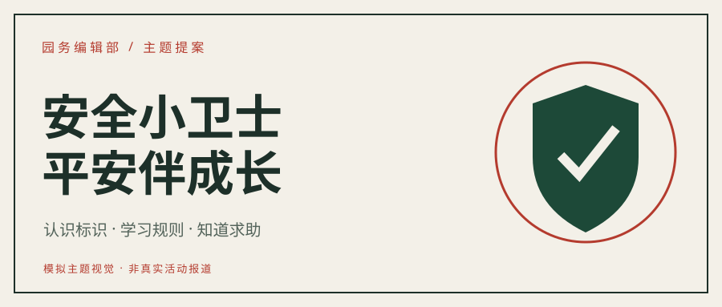
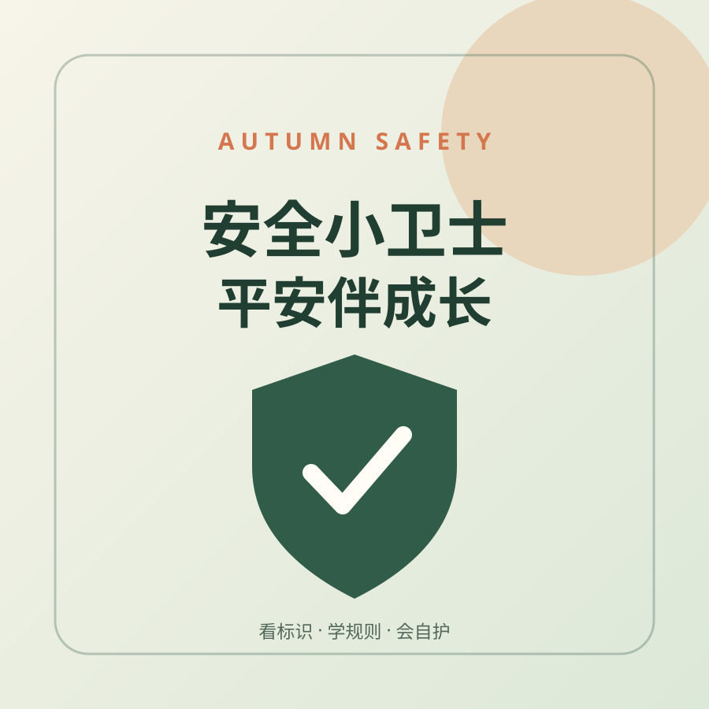
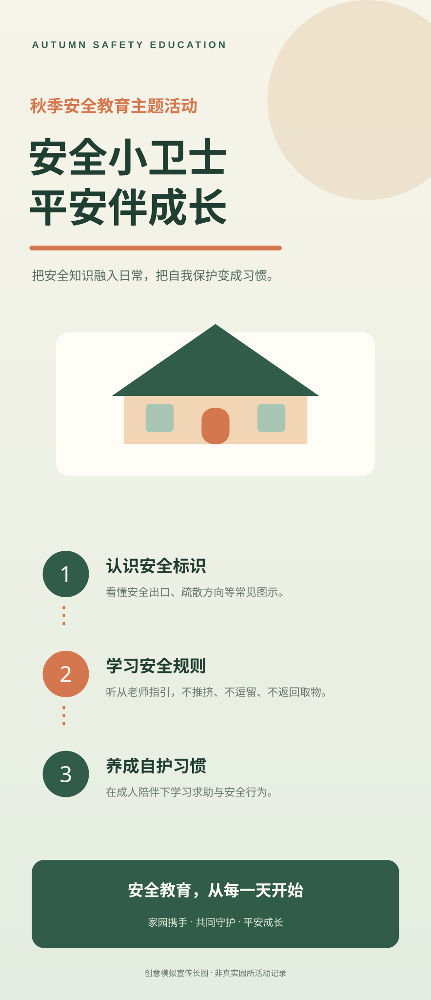

公众号头条封面
横向信息结构，标题优先，装饰退后。
900 × 383 / SVG
一份面向幼儿园秋季安全教育的主题视觉提案。设计从“认识标识、学习规则、知道求助”三个具体行动出发，不把安全教育做成口号墙。

公众号头图、次条封面和活动长图不是把主海报简单裁切。每种尺寸都重新安排标题、说明与视觉重心，确保在手机端仍然清楚。

横向信息结构，标题优先，装饰退后。

缩略图中保留主题关键词，不依赖细小文字。

用于承载活动说明；具体日期、地点和流程必须以园方核实信息为准。
减少无意义装饰。深色用于建立秩序，朱砂红标记重点，纸白为文字和图形留出呼吸空间。
设计判断来自国内园所信息宣传工作与儿童教育品牌视觉案例的研究，而不是套用通用幼儿园模板。
翠苑第四幼儿园的编辑培训强调简约、避免商业化和多设备预览。本项目先保证手机缩略图的标题可读。
安全标识、路径、编号和检查符号与主题直接相关，不额外堆叠彩虹、气球和无关卡通角色。
爱心托、AEI 与億禾林等品牌案例显示，色彩、字体、辅助图形和版式需要共同构成系统，不能只做一张孤立海报。